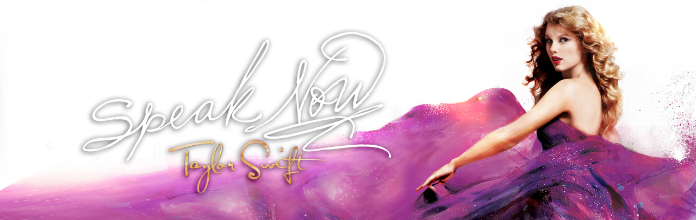
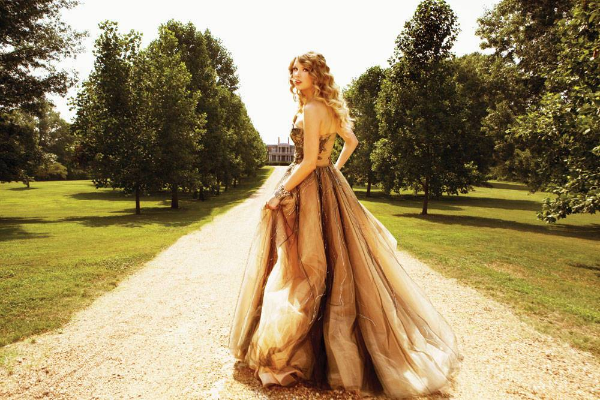

这张专辑原被泰勒·斯威夫特取名为“Enchanted”，但这个名字被大机器唱片公司的高管给驳回了。因为他认为，这张专辑中的所有歌曲大多都与这个
名字类型的题材无关。于是，泰勒·斯威夫特便将这张专辑重新取名为“Speak Now”，而这个名字的灵感来源于西方婚礼时，牧师在婚礼结束前所说的话：
“有异议就请现在开口，否则请永远保持缄默”。
《Speak Now》收录的14首歌曲均由泰勒独自编写，专辑曲乐由内森·查普曼和泰勒·斯威夫特共同制作。在谈到专辑的创作动机时，泰勒·斯威夫特则
表示专辑中的歌曲，写的全都是她在该说的时候，却没有说出口的话，这些歌曲就像是一封封的公开信，每一首歌曲都是泰勒·斯威夫特要献给在她自己心中
特定的人，告诉他们她曾经想对他们说的话。
该专辑历时两年完成，为了能够积攒更多创作的素材，泰勒·斯威夫特决定搬回到自己的故乡。该专辑中的十四首歌曲分别在纽约、堪萨斯州、波士顿和
纳什维尔创作完成，并且没有与任何词曲作者合作写歌。有一次泰勒·斯威夫特住在阿肯色州凌晨三点的时候，有了创作灵感但身边没有人，所以就只能自己
来完成创作。
1. Mine
2. Sparks Fly
3. Back to December
4. Speak Now
5. Dear John
6. Mean
7. The Story of Us
8. Never Grow Up
9. Enchanted
10. Better Than Revenge
11. Innocent
12. Haunted
13. Last Kiss
14. Long Live
专辑封面中的泰勒·斯威夫特身穿一袭紫色薄纱长裙，性感、成熟而不失小女人韵味，裙尾四周的白紫亮点相互融缀，给观众带来梦幻般的华丽视觉。
这张专辑所写的歌词都与泰勒的生活密切相关，例如《Mine》：它透露了少女在恋爱中的甜蜜心事和失恋后的痛苦失落，虽然看待事物的角度间或有些90
后的自我中心，但也无伤大雅。专辑中既有像《Sparks Fly》那样带有摇滚风和火热青春动感的经典乡村作品，也有《Dear John》似的慢板抒情民谣歌曲
，展现出泰勒细腻而感伤的一面。
《Speak Now》是泰勒·斯威夫特另一个大胆野性的尝试，她在这张专辑加重了摇滚音乐（甚至是硬摇滚）与流行音乐的体现。专辑中也有许多漫长、
沉重且带有负面情绪的歌曲，但这些歌曲都带有一定的治愈性，它们的内容也包含了许多关怀、鼓励、道歉等广泛而又丰富的情感经历。专辑第七曲《The
Story of Us》描述了一对男女在分手之后再次相遇时的尴尬，该曲音乐偏向于流行朋克和流行摇滚音乐，歌曲本身被设有一个充满活力的定音鼓节拍、
电吉他和快节奏的副歌部分。
不可忽略的是，泰勒·斯威夫特越来越敢于展现出其柔韧硬朗的个性，就如同专辑名称那样，她把很多真实的想法通过音乐表达给别人听：在《Mean》
中，她急促地弹拨着木吉他，用不屑的姿态表达着对来自媒体的尖锐批评和讽刺的强硬反抗。在《Innocent》中，她以沉郁忧伤的曲调来感化听众，歌词
流露出宽容的意味，整首歌曲令人回味悠长。

| 获奖记录 | |||||||||||
|---|---|---|---|---|---|---|---|---|---|---|---|
| 时间 | 颁奖机构 | 授予奖项 | 获奖作品 | 结果 | |||||||
| 2011 | 第48届朱诺奖 | 年度国际专辑 | 《Speak Now》 | 提名 | |||||||
| 第46届乡村音乐学院奖 | 年度最佳专辑 | 《Speak Now》 | 提名 | ||||||||
| 2011年公告牌音乐奖 | 最佳乡村专辑 | 《Speak Now》 | 获奖 | ||||||||
| 最佳公告牌二百强专辑 | 《Speak Now》 | 提名 | |||||||||
| 第45届乡村音乐协会奖 | 年度最佳专辑 | 《Speak Now》 | 提名 | ||||||||
| 第39届全美音乐奖 | 最受欢迎乡村专辑 | 《Speak Now》 | 获奖 | ||||||||
| 2012 | 第54届格莱美奖 | 最佳乡村专辑 | 《Speak Now》 | 提名 | |||||||
| 最佳乡村独唱 | 《Mean》 | 获奖 | |||||||||
| 最佳乡村歌曲 | 《Mean》 | 获奖 | |||||||||